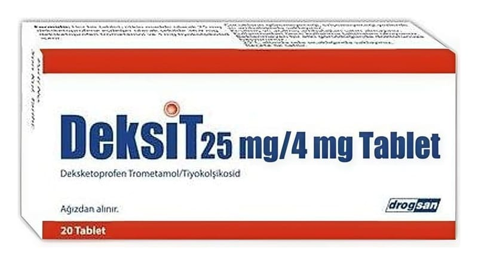

Deksit 25 mg/4 mg Tablet

Ne için kullanılır
KT · Bölüm 1DEKSİT tablet, etkin madde olarak deksketoprofen ve tiyokolşikosid içerir. DEKSİT, sarımsı, yuvarlak, düz çentikli tablet şeklindedir. Tabletlerdeki çentiğin amacı yalnızca yutmak için tabletin kırılmasını kolaylaştırmaktır. Tabletin eşit dozlara bölünmesi için değildir. DEKSİT, 20 tablet içeren, blister ambalajlarda sunulmaktadır. DEKSİT’in içeriğindeki deksketoprofen steroid olmayan iltihap giderici ilaçlar (NSAİİ) olarak adlandırılan ilaç grubundan bir ağrı kesicidir. DEKSİT’in içeriğindeki tiyokolşikosid esas olarak kas gevşetici etkinliğe sahiptir. Tiyokolşikosid, ağrılı kas kramplarının belirtilere yönelik tedavisi amacıyla kullanılır. DEKSİT osteoartrit (kireçlenme), vertebral kolonun (omurganın) ağrılı sendromları, eklem dışı romatizma, ağrılı kas kasılmalarının belirtilere yönelik tedavisinde, travma ve ameliyat sonrası oluşan ağrının tedavisinde kullanılır.